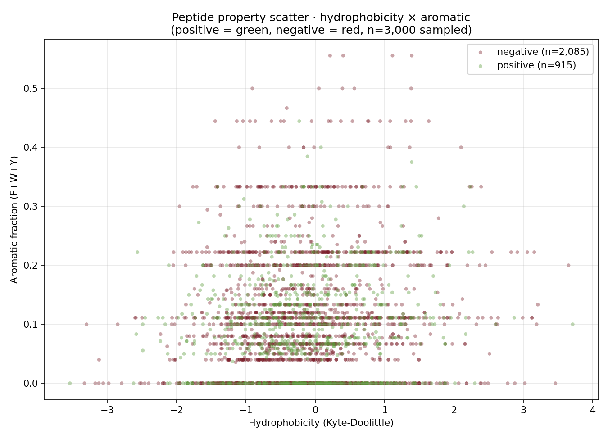

Lumenix · Peptide property scatter · 2026-05-08
Peptide Property Landscape · Hydrophobicity × Aromatic
Two-dimensional projection of all labeled peptides on the (hydrophobicity, aromatic-fraction) plane. Positive vs negative do show some separation — positives are slightly less aromatic, slightly more hydrophobic — but with massive overlap. This is why biophysics-only models hit AUROC ~0.5-0.6 under LOSO.

Figure · 3,000 sampled peptides. Green = positive, Red = negative. The two distributions overlap heavily but with mean differences (validated by Mann-Whitney U: aromatic p=1.4e-210, hydrophobicity p=4.8e-22 in pooled analysis).
3,000peptides sampled
p=1.4e-210aromatic effect (pooled)
p=4.8e-22hydrophobicity effect
~0per-allele Δf_H (Simpson's)
0.832D RF AUROC pooled
Why the overlap matters
- Pooled effect sizes are statistically significant (p < 1e-22) but small in magnitude.
- Per-allele stratification attenuates many features (Simpson's paradox for histidine).
- Aromatic depletion in immunogenic peptides is robust per-allele (-0.027 to -0.051 Δ).
- The visual overlap explains why models trained on biophysics alone reach LOSO AUROC ~0.5; the discriminative signal is in higher-dimensional features (PLM, anchor preferences, mhcflurry binding).
◀ Cancer × gene · Master index · ▶ ESM2 UMAP